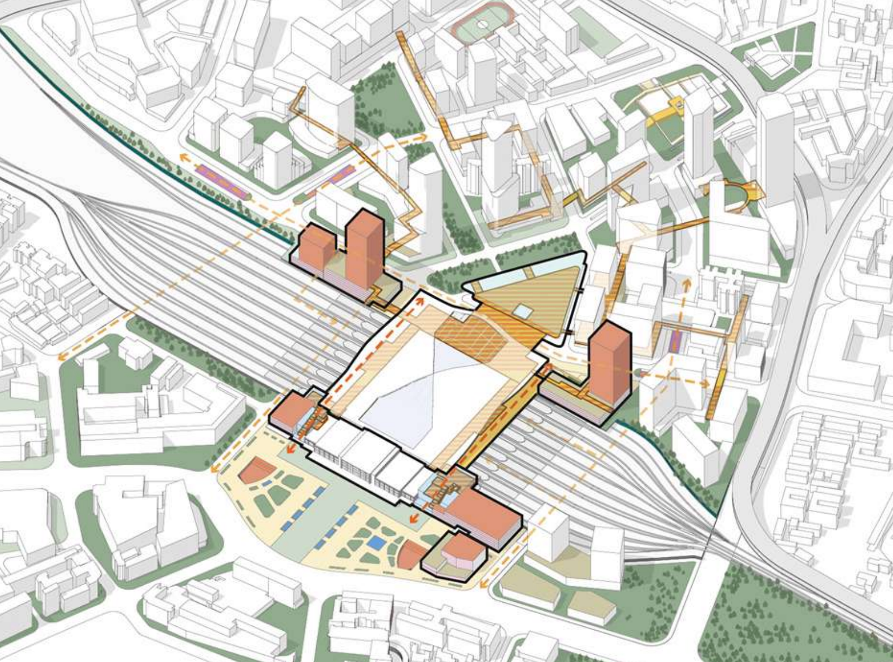
项目概要：
广州站以北的三元里片区，经历了抗英斗争、改革开发带来的商贸批发业的蓬勃发展和作为广交会交流示范的窗口，在广州火车站谋划“高铁入城”背景下，迎来新的发展机遇。 设计方案延续了历史进程中塑造车站南北空间的内在逻辑，创造了具有差异性的南北广场。通过林荫道，连廊与广场形成的丰富点轴空间，提出打造“城镇景观”的理念，串联传承记忆的场所，呼应广州老城自南向北的文脉，商脉和绿脉。
为实现规划目标而提出形塑开发的模式与方法。基于访谈与调研，设计将参与开发的多方浓缩为政府、开发商、业主、公众四个角色并进行磋商，确定共同的发展目标。各方基于经济可行性进行合作，制定片区开发综合解决方案，并通过公法与私法对空间规划要素进行固定。公法（法定规划）包括——交通规划、片区规划结构、 开发强度控制、公私空间划分、公共空间体系、功能分区层层递进的规划逻辑。私法（开发协议） 兼顾灵活性与规划实施，实现合作共赢与项目运营的可持续发展。 我们所提出的设计理念和形塑开发的模式， 创造了连接铁路线南北的中央走廊、合作开发的 TOD 城市核、自主更新住区等富有想象力、地方场所感与跨越产权边界的空间设计。体现了制定城市开发综合解决方案，实现项目良性合作与可持续发展的美好前景与可行性。
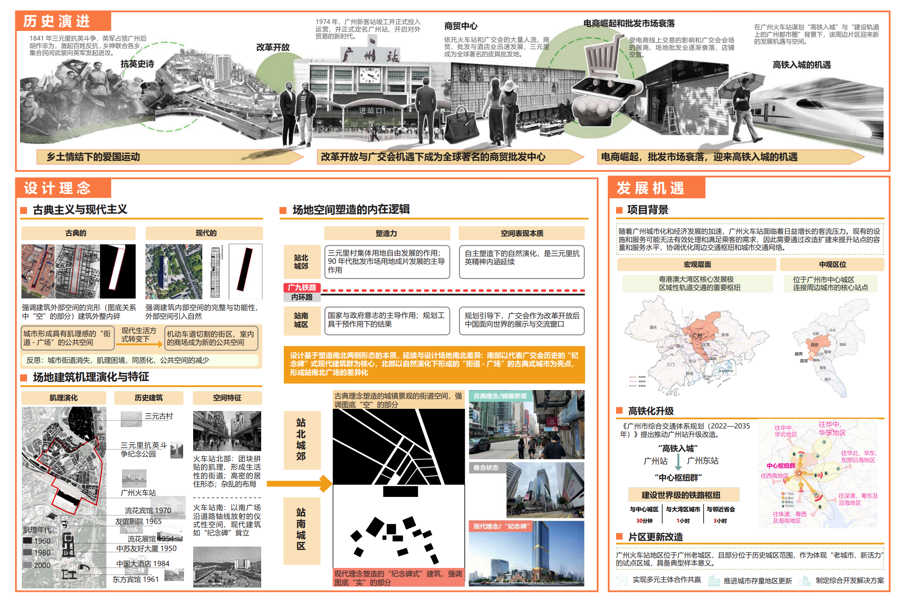
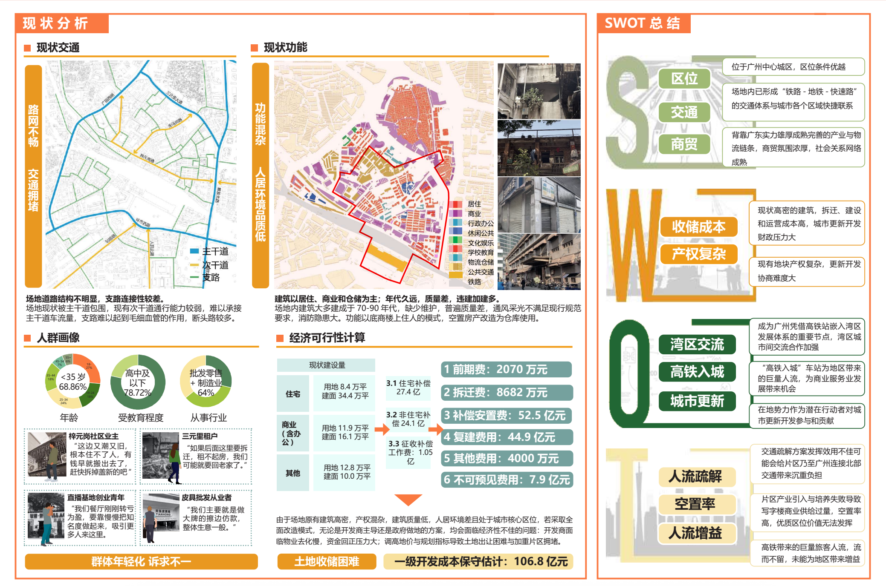
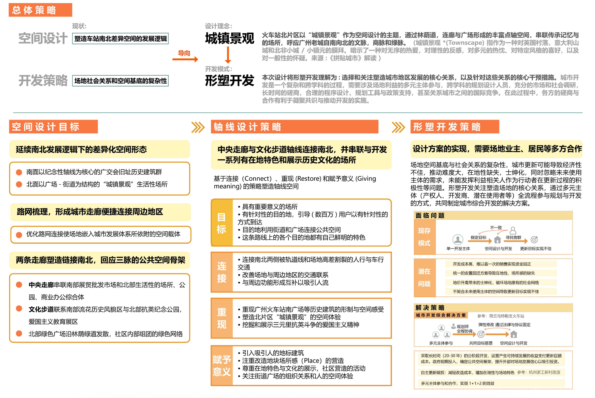
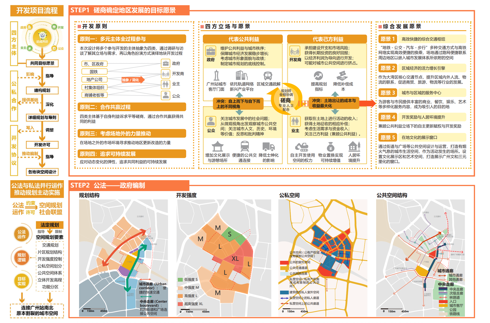
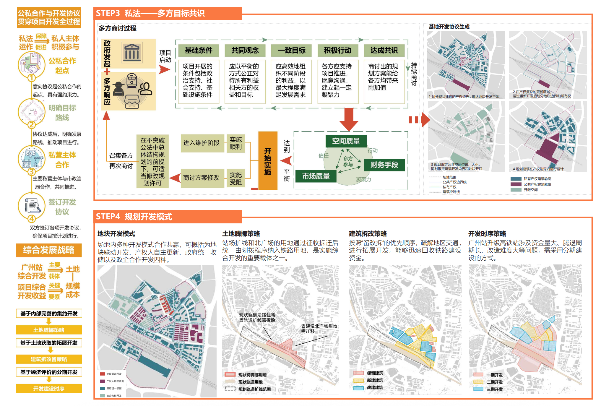

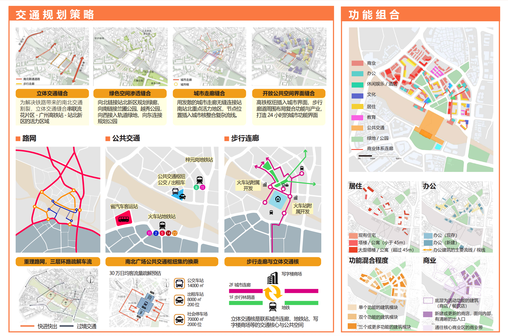
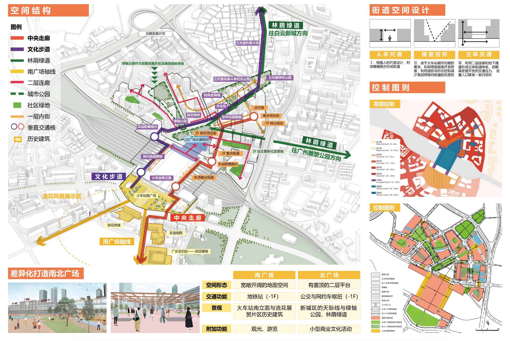
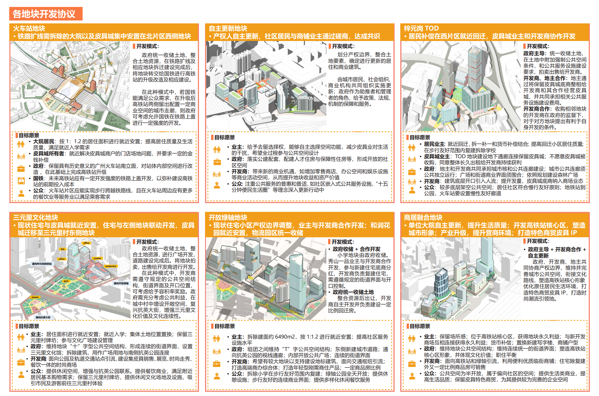
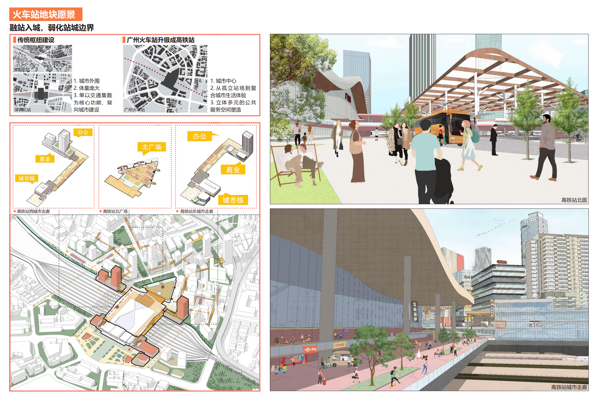
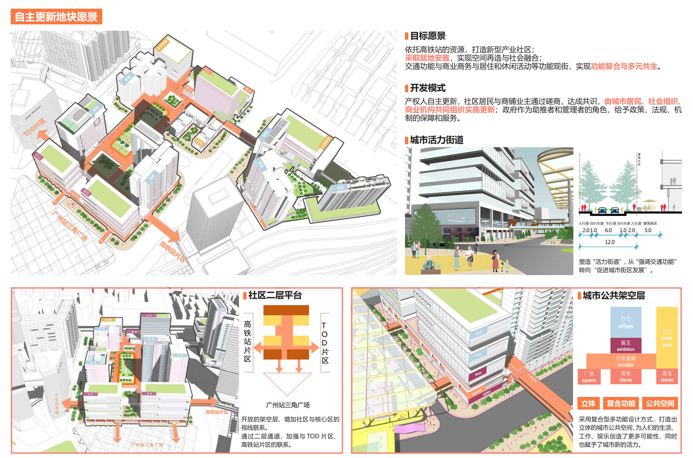
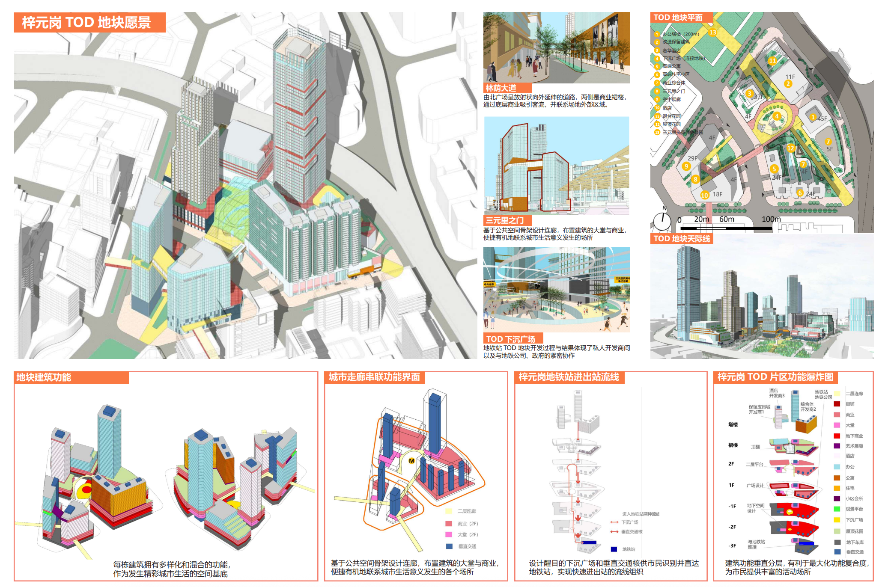
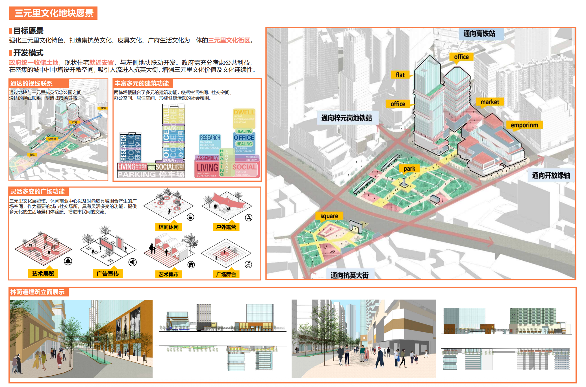
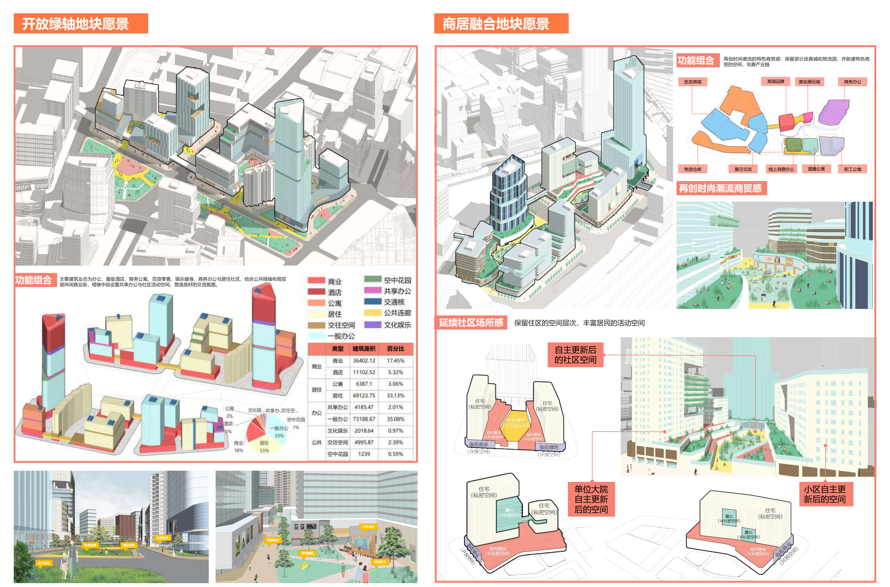
我们毕业设计是在2024年的上半年，中国城市规划行业来到了十字路口——随着大规模城镇化的结束，以及房地产行业的“暴雷”，以空间设计为导向的城市规划作为上一段特殊时期的工具正面临被淘汰的风险。控制性详细规划，城市设计曾是规划行业的收入支柱，如今业务大幅萎缩，城市规划该如何实现转型？
城市更新是发展的必然方向，然而现有更新模式存在诸多不足：行政力量主导缺乏经济利益考量，对场地产业商业文化的生态造成消极影响，缺少平衡公众利益，可持续发展与运营能力有限等，导致城市更新往往未能实现既定目标。
我们所提出的形塑开发的模式——选择和关注塑造城市地区发展的核心关系，针对这些关系进行核心敢于。从而创造了富有想象力、地方场所感与跨越产权边界的空间设计。体现了多元主体全流程参与片区开发，实现项目良性合作与可持续发展的美好前景与可行性。
Project Overview:
The Sanyuanli area, located north of Guangzhou Railway Station, has experienced several historical phases, including the anti-British resistance movement, the rapid growth of wholesale trade brought by economic reform and opening-up, and its role as a demonstration window for exchanges during the Canton Fair. Under the current context of planning to bring high-speed rail into the city at Guangzhou Railway Station, the area is facing new development opportunities.
The design proposal continues the internal logic that historically shaped the north–south spatial structure of the station, creating differentiated plazas on the north and south sides. Through the spatial organization of tree-lined boulevards, corridors, and plazas, forming a rich sequence of nodes and axes, the project proposes the concept of creating an “urban landscape.” This landscape connects places that preserve collective memory and echoes the cultural, commercial, and ecological continuities of Guangzhou’s historic city from south to north.
To achieve the planning objectives, the project proposes a development framework and implementation methodology-Shaping Development. Based on interviews and research, the stakeholders involved in development are distilled into four roles—government, developers, property owners, and the public—who negotiate to establish shared development goals. Each party collaborates based on economic feasibility to formulate a comprehensive development solution for the district, while spatial planning elements are secured through both public law and private law mechanisms.Public law (statutory planning) includes a hierarchical planning logic covering transportation planning, district spatial structure, development intensity control, public–private space allocation, public space systems, and functional zoning. Private law (development agreements) balances flexibility with implementation, enabling cooperative outcomes and the sustainable operation of the project.
The proposed design concept and development-shaping approach create imaginative spatial interventions that cross property boundaries and foster a strong sense of place, including a central corridor connecting the north and south sides of the railway, a collaboratively developed TOD urban core, and self-renewing residential communities. These proposals demonstrate the feasibility and potential of establishing a comprehensive urban development solution that supports effective collaboration and long-term sustainable development.
No translation for the contents below
Shaping Development Methodologies
Development Process
Master Plan
Development Agreement
Conclusion
Our graduation project falls in the first half of 2024, a pivotal moment for China's urban planning industry. With the conclusion of large-scale urbanization and the implosion of the real estate sector, spatial design-oriented urban planning—once a tool for a unique era—now faces obsolescence. Control detailed planning and urban design, once the industry's revenue pillars, have seen business plummet. How can urban planning achieve transformation?
Urban renewal represents an inevitable developmental path. However, existing renewal models suffer from numerous shortcomings: administrative dominance without economic incentives negatively impacts site-specific industrial, commercial, and cultural ecosystems; inadequate balancing of public interests; and limited sustainability and operational capacity. These flaws often prevent urban renewal from achieving its intended goals.
Our proposed Shaping Development model—selecting and focusing on core relationships that shape urban district development, then boldly intervening in these relationships—creates imaginative spatial designs rich in local character and transcending property boundaries. This approach embodies the promising and feasible vision of multi-stakeholder, full-process participation in district development, enabling positive project collaboration and sustainable growth.